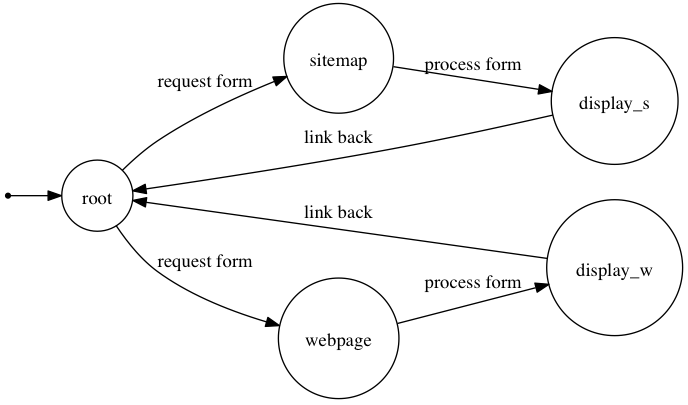

Designing Hypermedia APIs
by @steveklabnik
Hello there,
I'm Steve.
I hack on
Hackety Hack.
I teach with
Jumpstart Lab.
one day, I went
Searching
for the meaning of
REST
REST is

Remember, I'm speaking about ‘Rails REST.’
REST APIs
Hypermedia APIs
Some Background
Designing Hypermedia APIs
API Overview
Four major architectural styles
RPC
POST /jsonrpc
{ "method": "echo",
"params":
["Hello JSON-RPC"],
"id": 1
}
Response:
{ "result": "Hello JSON-RPC",
"error": null, "id": 1}
RPC
Make a method call over the internet.
SOAP
POST /soap
<xml>
ZOMGSOMUCHSTUFF
Response:
<xml>
ZOMGSOMUCHSTUFF
SOAP
Send an object over the wire.
Remember, I'm speaking about ‘Rails REST.’
REST
PUT /posts/1
&title=Hello%20World
Response:
200 OK
REST
RPC with a uniform interface
Hypermedia
GET /
Content-Type: application/collection+json
{ "collection" :
{
"links" : [
{"rel" : "feed",
"href" : "http://example.org/rss"}
],
...
}
Hypermedia
Hypertext as the engine of application state
RECAP: Four major architectural styles
- RPC
- SOAP
- REST
- Hypermedia
Some Definitions
hy·per·me·di·a
hypertext
[hahy-per-tekst]
Hypertext is text displayed on a computer or other electronic device with references (hyperlinks) to other text.
Hypermedia extends hypertext to all media.
Media type
A media type is a way of identifing the structure of a document.
Ex: application/json, text/html
Hypermedia APIs
Hypermedia APIs
- HTTP
- MIME
- Hypermedia
HTTP
How stuff gets sent
MIME
What stuff gets sent
Hypermedia
Specific kinds of stuff that gets sent
Why HTTP?
- Client-Server
- Stateless
- Caching
- Uniform Interface
- identification of resources
- representations
- self-descriptive messages
- hypermedia as the engine of application state
- Layered System
- Code-on-demand
Why HTTP?
Client-ServerStatelessCachingUniform Interfaceidentification of resourcesrepresentationsself-descriptive messages- hypermedia as the engine of application state
Layered SystemCode-on-demand
GET /photos/12/delete
MIME & Hypermedia
Sitting in a tree
Five steps of
Hypermedia
API Design
Five Steps
- Evaluate Business Processes
- Create State Machine
- Evaluate Media Types
- Create Media Types
- Implement!
A wild example appears!

GET /api/v1/sitemaps/check
?uri=http://www.zeldman.com
Host: http://w3clove.com
Response
{
"created_at": "2012-01-30T01:17:04Z",
"scraped_at": "2012-01-30T01:17:10Z",
"scraping_success": true,
"url": "http://www.zeldman.com",
"web_pages_count": 57,
"validation_errors_count": 2951,
"validation_warnings_count": 8,
"web_pages": [{
"created_at": "2012-01-30T01:17:09Z",
"url": "http://www.zeldman.com/",
...
GET /api/v1/web_pages/check
?uri=http://www.zeldman.com/2011/12/23/hitler-reacts-to-sopa/
Host: http://w3clove.com
Evaluate
Business
Processes
Two processes
Web Pages
Sitemaps
Create
State
Machine


Evaluate
Media
Types
JSON cant drive your API.
Sorry.
Build hypermedia semantics on top of JSON.
Let's do it!
Create Media Types
Media type design is just as much an art as it is a science.
Needed in a definition:
- data elements
- hypermedia controls
w3clove.validation+json
application/vnd.w3clove.validation+json
Data Elements
{
"created_at": "2012-01-30T01:17:04Z",
"scraped_at": "2012-01-30T01:17:10Z",
"scraping_success": true,
"url": "http://www.zeldman.com",
Data Elements
A response MAY contain created_at, scraped_at, scraping_success, updated_at, url, web_pages_count, validation_errors_count, validation_warnings_count, and pending_count elements.
Hypermedia Controls
A response MAY include a forms element, which is an array of objects. They MUST have these elements: href, rel, and data elements. data will be an array of objects that MUST have two keys, name, and value.
Hypermedia Controls
sitemap-form: Following a link with this rel will lead you to a resource with a form for generating a Sitemap API request.sitemap: Processing a form with this rel will lead you to a resource that gives you validation information about a sitemap.
Implement!
Sample response
request("http://w3clove.com/api/",
"application/vnd.w3clove.validation+json")
# =>
{
"links":[
{"rel":"website-form", "href":"..."},
{"rel":"sitemap-form", "href":"..."}
]
}
uri = response["links"].find {|link|
link["rel"] == "sitemap-form"
}["href"]
request(uri,
"application/vnd.w3clove.validation+json")
# =>
{
"forms":[
{"href":"...",
"rel":"sitemap",
"data":[
"name":"check",
"value":""]}
]
}
Recap
- Evaluate Business Processes
- Create State Machine
- Evaluate Media Types
- Create Media Types
- Implement!